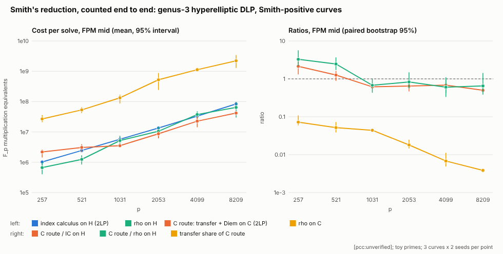

Study smith_transfer_cost_20261115. Protocol
PROTOCOL.md, sha256
89a6fe5ce1b18be3a5a9a696bc89beaaedccc86df3fc894e9e7262c27a9a98e2,
frozen 2026-11-15T04:22:13Z, immediately before the run
(run.log: 04:22:13Z to 04:41:18Z, exit 0). Data
runs.jsonl, analysis analysis.json
(genus_ladder_analyze), tables tables.md,
figure fig_cost.svg (fig_cost.png is a render
of it), hashes data.sha256, binary and source hashes
binary.sha256.
Every number here is [pcc:unverified]: one producer, one
shared 4-vCPU host, no independent replay, no pcc claim. Synthetic toy
curves. Pre-gate: no leaderboard row, no
benchmarks/README.md row, no bench record.

For p = 257, 521, 1031, 2053, 4099, 8209: the first
three curve seeds whose genus-3 curve y^2 = f(x) has
#J = h r (h <= 8, r prime), is
Smith-positive with a normal-form trigonal map, and whose canonical
quartic C is smooth with #C(F_p) = #H(F_p). 18
instances, 2 seeds each, four arms: 144 runs. Arms and counted unit as
in the protocol; the transfer’s F_p work is inside
C_transfer_diem_2lp and also reported apart.
“C route” = transfer by Psi, then Diem’s
double-large-prime index calculus on C. “IC on H” =
double-large-prime index calculus on H with prefilter.
| p | IC on H | rho on H | C route | rho on C | C route / IC on H | C route / rho on H | IC on H / rho on H | transfer share of C route |
|---|---|---|---|---|---|---|---|---|
| 257 | 1.02e6 | 6.66e5 | 2.18e6 | 2.69e7 | 2.14 [1.32, 3.13] | 3.28 [2.19, 5.68] | 1.53 [0.99, 2.48] | 7.2% [5.9, 10.8] |
| 521 | 2.44e6 | 1.24e6 | 3.08e6 | 5.32e7 | 1.26 [0.88, 1.62] | 2.47 [1.71, 3.68] | 1.96 [1.40, 3.01] | 5.2% [3.9, 7.3] |
| 1031 | 5.70e6 | 5.19e6 | 3.51e6 | 1.33e8 | 0.616 [0.557, 0.654] | 0.677 [0.431, 1.02] | 1.10 [0.76, 1.55] | 4.4% [4.1, 4.8] |
| 2053 | 1.35e7 | 1.05e7 | 8.69e6 | 5.24e8 | 0.646 [0.466, 0.809] | 0.827 [0.556, 1.48] | 1.28 [0.93, 2.24] | 1.8% [1.5, 2.5] |
| 4099 | 3.32e7 | 3.75e7 | 2.26e7 | 1.13e9 | 0.681 [0.418, 0.957] | 0.604 [0.333, 1.10] | 0.89 [0.68, 1.32] | 0.68% [0.49, 1.12] |
| 8209 | 8.37e7 | 6.42e7 | 4.18e7 | 2.22e9 | 0.500 [0.447, 0.572] | 0.652 [0.385, 1.43] | 1.30 [0.86, 2.79] | 0.38% [0.34, 0.42] |
The same ratio C route / IC on H on the other two
readings (tables.md S4):
| p | FPM low (inversion 1, la 1) | FPM mid (10, 9) | FPM high (30, 9) | across the band |
|---|---|---|---|---|
| 257 | 3.09 [2.17, 3.80] | 2.14 [1.32, 3.13] | 2.12 [1.32, 3.01] | above |
| 521 | 2.20 [1.63, 2.70] | 1.26 [0.88, 1.62] | 1.28 [0.90, 1.63] | unresolved |
| 1031 | 1.24 [1.11, 1.33] | 0.616 [0.557, 0.654] | 0.622 [0.561, 0.662] | unresolved |
| 2053 | 1.28 [0.97, 1.57] | 0.646 [0.466, 0.809] | 0.643 [0.464, 0.805] | unresolved |
| 4099 | 1.38 [0.96, 1.77] | 0.681 [0.418, 0.957] | 0.669 [0.412, 0.938] | unresolved |
| 8209 | 1.07 [0.98, 1.18] | 0.500 [0.447, 0.572] | 0.485 [0.435, 0.555] | unresolved |
Growth exponents in p (analyzer OLS on ln mean, six
primes, bootstrap 95%):
| arm | FPM low | FPM mid | FPM high | group operations |
|---|---|---|---|---|
IC on H (H_C_double_lp+pre) |
1.148 [1.136, 1.167] | 1.270 [1.243, 1.320] | 1.250 [1.225, 1.294] | 1.010 [1.000, 1.022] |
rho on H (H_rho_neg) |
1.394 [1.222, 1.548] | 1.395 [1.223, 1.549] | 1.396 [1.223, 1.550] | 1.396 [1.223, 1.550] |
C route (C_transfer_diem_2lp) |
0.872 [0.803, 0.945] | 0.895 [0.810, 0.985] | 0.866 [0.782, 0.956] | 0.446 [0.366, 0.535] |
rho on C (C_rho_neg) |
1.347 [1.210, 1.467] | 1.347 [1.210, 1.466] | 1.346 [1.210, 1.466] | 1.332 [1.195, 1.450] |
C by Diem’s algorithm, and by rho on
C, is the planted logarithm on H.H from p = 1031 on (ratio 0.62, 0.65, 0.68,
0.50; every interval below 1). On FPM low it does not: there the ratio
is above 1 at every prime (1.24, 1.28, 1.38, 1.07). The difference
between the readings is the price of the linear algebra modulo
r: la_mul is weighted 9 on mid and high and 1
on low, and the H arm does 4 times the linear-algebra
multiplications of the C arm at p = 8209
(6.90e6 against 1.64e6), while the C arm does more
relation-phase and Pic work. So the advantage at these
sizes rests on pricing a multiplication modulo r ~ p^3 at 9
field multiplications.p on every reading; within
the grid it is not monotonic (0.62, 0.65, 0.68, 0.50 on mid) and at 3
curves x 2 seeds the intervals at 2053 and 4099 are wide. On FPM low the
fitted lines would cross near p ~ 1e4 (extrapolation, not
measured).H (the reference of the
success criterion): index calculus on H is at 0.9 to 2.0
times rho on FPM mid, never resolved on either side from 1031 on; the C
route is at 0.60 to 0.83 times rho from 1031 on, with intervals that
reach or cross 1 at every prime (0.431 to 1.02 at 1031 is the closest to
resolved). Neither index calculus arm is shown to beat rho on
H at these sizes. Under the section 5a band the order C
route < rho on H holds as a point estimate on all three FPM readings
from 1031 on and is not resolved on any.C is 25 to 50 times rho on H (a
Pic^0 addition on the plane quartic costs about 9,000 field
multiplications against about 220 for a genus-3 Cantor step). The
transfer is useless for rho; it pays only through Diem’s algorithm.p (1.40e5 to 1.46e5 across the grid).
80% of it is the 19 Pic^0 operations and about 17 class
constructions on C; building T(t) is 680
multiplications, the quartic fit 8,100 to 8,800, image points and conic
conditions 11,000 to 15,000, Cantor steps and root finding 6,000 to
8,200 for 15 to 19 candidate representatives.| prediction | measured | verdict | |
|---|---|---|---|
| T1 | every run certifies, transferred log = planted log,
ord_ratio 1 |
144/144 certified and correct; 36/36 transfers succeeded;
ord_ratio 1 on all; 0 zeta mismatches |
holds |
| T2 | C route below IC on H on all three FPM readings at
p >= 1031; mid ratio falls from 1031 to the largest
prime |
below on FPM mid and high at 1031, 2053, 4099, 8209; ABOVE 1 on FPM low at all four (point estimates 1.07 to 1.38); mid ratio 0.616 at 1031, 0.500 at 8209 | fails as stated (the band condition); holds on two of three readings; the “falls” part holds end to end, not monotonically |
| T3 | transfer below 5% of the arm (FPM mid) at
p >= 1031 |
4.4%, 1.8%, 0.68%, 0.38% | holds (4.4% [4.1, 4.8] at 1031 is close to the bound; on FPM low the share at 1031 is 5.5%) |
| T4 | exponents (FPM mid): IC on H in [1.0, 1.4]; C route in [0.6, 1.0]; rho on H in [1.3, 1.6] | 1.270 [1.243, 1.320]; 0.895 [0.810, 0.985]; 1.395 [1.223, 1.549] | holds (point estimates; the rho interval extends below 1.3) |
| T5 | Smith-positive / admitted in [0.05, 0.20] | 18/105 = 0.171 (Wilson 95% [0.111, 0.255]) | holds on the stated statistic; see the bias note |
T5 bias: each prime’s search stops at its third accepted curve, so
the last admitted curve of every prime is a success. The pooled fraction
18/105 overstates the rate. Dropping the last curve of each of the six
searches gives 12/99 = 0.121. Both are inside the predicted range. All
18 Smith-positive admitted curves had a usable normal-form map, a smooth
C and a matching point count: no curve was lost between
“Smith-positive” and “accepted”.
| p | seeds tried | admitted | Smith-positive | accepted | search wall s |
|---|---|---|---|---|---|
| 257 | 116 | 12 | 3 | 3 | 2.8 |
| 521 | 278 | 17 | 3 | 3 | 19.9 |
| 1031 | 257 | 21 | 3 | 3 | 57.2 |
| 2053 | 205 | 16 | 3 | 3 | 133.7 |
| 4099 | 466 | 27 | 3 | 3 | 785.0 |
| 8209 | 168 | 12 | 3 | 3 | 994.3 |
Cofactors of the accepted instances are 2, 4, 6 or 8 (never 1: a
Smith-positive curve has even order). Instances with f,
N, D, the 15 coefficients of C,
P0, order, h, r are the
instance records of runs.jsonl
(tables.md S2).
binary.sha256).genus_ladder.rs carried another session’s uncommitted work
(structured Gaussian elimination behind IcParams.sge). This
driver passes sge: None, which that module documents as the
unchanged instrument; the file’s hash at build time is in
binary.sha256. Not independently checked here.quartic_ladder::make_instance_from_classes takes one
argument more than the brief’s sketch (n_points, which
QInstance stores).p = 131
(pilot/pilot_131.jsonl, 2 curves, 1 seed) ran before the
freeze, as the protocol says.Counted in transfer_mul / transfer_inv:
building T(t); square roots in F_p and
F_p^2, image points and T(t) b for every point
used; the 15-column fit through 20 image points;
PlaneQuartic::setup_cost; conic conditions,
class_from_conics, Pic^0 additions and
negations; Cantor additions, split tests and root finding of the
representative search. Multiplications by the fixed non-residue and
squarings count as multiplications; additions are not priced.
Not counted, in any arm:
smith_prop24::analyze_curve: factoring f, the
tractable subgroups, linear algebra over extensions of degree at most
8);Trigonal::new
(F mod G, s(t), its square root, the
deltas);PlaneQuartic::new (setup_cost reports 15
multiplications: it covers the base-point data only). The ladder’s
quartic arms do not count these either;#C(F_p) = #H(F_p), and
the checks [r] Psi(G) = 0, Psi(T) = [t] Psi(G)
made when the instance is formed.The first two are part of the attacker’s work and are missing from
the C route. They do not grow with p beyond
log p factors; their size was not measured, so the transfer
share (0.4% to 7%) is a lower bound on the true overhead of the route,
by an amount this study cannot state.
nb = 2 p^(2/3) on H,
3 sqrt p on C, no tuning of either, no
structured Gaussian elimination on either). A better-tuned
H arm or C arm would move the ratio.p; the
predicted asymptotics (p^(4/3) on H,
p on C up to logs) are not tested beyond
that.F_p^2) costs about 6 s per seed there
and grows like p^2; the arms themselves took under 40 s per
run. A larger prime needs a faster order computation, not more solver
time.Pic^0 operation by its field
multiplications in this implementation of
plane_quartic_pic; that implementation was not optimised
and its constant (about 9,000 multiplications per addition) enters the C
route through the 1,052 group operations at 8209 (4.2e6 of 4.2e7).tables.md S8, shared
host).